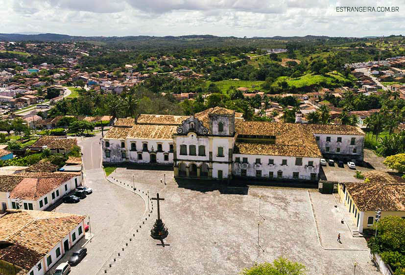

São Cristovão
História
Era janeiro de 1590 quando o capitão português Cristóvão de Barros fundou a quarta cidade mais antiga do Brasil: São Cristóvão. Intitulada Cidade Mãe de Sergipe, pela Lei Nº. 8.824/2021, de autoria do Deputado Francisco Gualberto (PT), o município é tido como Capital Honorária do Estado.
São Cristóvão foi a capital da Capitania de Sergipe durante a época das capitanias hereditárias até a transferência da capital para Aracaju em 17 de março de 1855. O lugar conta com alguns edifícios históricos e tradições a exemplo das romarias e as festas religiosas.
Ela foi ocupação dos espanhóis no espaço deixado pelos portugueses que nunca se interessaram na interiorização no período antes de Filipe II neste lado da América Meridional. A intenção dos espanhóis com sua fundação era a de construir a primeira via terrestre que ligasse o Nordeste Oriental e seus núcleos à época, conhecidas como urbes de Filipeia e vila de Olinda, e a urbe de São Salvador da Baía de Todos os Santos.
Na justificativa do projeto, Francisco Gualberto falou que o historiador Adailton Andrade, membro do Instituto Histórico e Geográfico de Sergipe e do Movimento Cultural Antônio Garcia Filho da Academia Sergipana de Letras e Acadêmico da Academia Sancristovense de Letras e Artes, escreveu sobre a pertinência do título de “Cidade Mãe de Sergipe” para São Cristóvão.
O parlamentar disse que o autor destacou que, a princípio, São Cristóvão foi erguida mais próxima ao litoral, perto da foz do Rio Vaza-Barris, e entre 1595 e 1596 foi transferida como medida de segurança contra uma possível invasão da França, sendo mudada para uma elevação próxima à barra do Rio Poxim, e posteriormente, sem que esteja elucidada a motivação, foi transferida em 1607 para a sua atual localização.
“Portanto, é justo o título de 'Cidade Mãe de Sergipe' por ser a localidade onde tudo começou para o Estado, com inegável legado histórico e cultural, constituído nos seus monumentos religiosos, no nome da cidade, na sua arquitetura com influência portuguesa e espanhola, no nome das pessoas de acordo com o dicionário do Sancristovense Armindo Guaraná, nos registros comprobatórios nos estudos e pesquisas de Felisbelo Freire, Maria Téthis Nunes, Ivo do Prado e tantos outros”, afirmou.
fonte: https://al.se.leg.br/cidade-mae-de-sergipe-sao-cristovao-conta-historia-brasileira/#:~:text=S%C3%A3o%20Crist%C3%B3v%C3%A3o%20foi%20a%20capital,romarias%20e%20as%20festas%20religiosas.Pontos Turísticos
PRAÇA SÃO FRANCISCO
O documento apresentado pelo IPHAN ao Comitê do Patrimônio Mundial ressaltou que o conjunto arquitetônico da Praça representa um registro íntegro e autêntico de um fenômeno singular no Brasil, que tem como contexto um período representativo de sua história: a aliança das coroas portuguesa e espanhola sob o domínio dos reinados de Felipe II e Felipe III. Ressaltou ainda que a Praça é a prova da fusão das influências das legislações e práticas urbanísticas espanholas e portuguesas na formação de núcleos urbanos coloniais. Desta forma, a autenticidade da Praça São Francisco está explícita em seu desenho, entorno, técnicas, uso, função, contexto histórico e cultural.
CASA DO FOLCLORE
A casa do folclore Zeca do Norberto localiza-se na Praça São Francisco em São Cristóvão, fundada em 16 de setembro de 2000, inicialmente funcionou na antiga Rua da Flores, hoje Rua Messias Prado. É nesta casa que é guardado boa parte do patrimônio imaterial da cidade. Em seu interior é possível encontrar pinturas, trajes, danças e outros traços da cultura popular sergipana.
Dados Gerais de acordo com o IBGE
| Prefeito (a) | MARCOS ANTÔNIO DE AZEVEDO SANTANA |
| Vice-Prefeito (a) | PAULO ROBERTO DE SANTANA JUNIOR |
| Site do município | https://www.saocristovao.se.gov.br/ |
| Área territorial | 438,037 km² |
| População estimada | 92.090 pessoas |
| Densidade demográfica | 180,52 hab/km² |
| IDHM | 0,662 |
| PIB per capita | 10.514,98 |